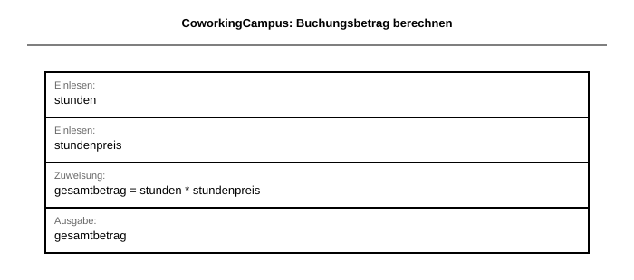

titel: "Klassenarbeit BG12 2025/2026: EERM und SQL (60 Min) – VERSION2 Lösung" klasse: "BG12" schuljahr: "2025-2026" fach: "Informatik und Wirtschaftsinformatik" bearbeitungszeit: "60 Minuten" erreichbare_punkte: 34 verteilung: modellierung_normalisierung_anomalien: 14 abfragen_mehrtabellen: 14 theorie_mc: 3 struktogramm: 3 artefakte: modellierung_eerm_lehrkraft: "lernlabor_2025.mwb" sql_db_dump: "coworkingcampus_struktur_2025.sql" sql_db_daten: "coworkingcampus_daten_2025.sql" sql_db_eerm: "coworkingcampus_2025.mwb" sql_db_eerm_grafik: "coworkingcampus_2025.png" fassung: loesung
Klassenarbeit (60 Minuten) – VERSION2 Lösung und Erwartungshorizont
Klasse/Kurs: BG12 | Schuljahr: 2025/2026 | Bearbeitungszeit: 60 Minuten | Erreichbare Punkte: 34
Hinweis: Diese Fassung enthält Musterlösungen und Bewertungshinweise.
Struktur
| Teil | Inhalte | Punkte | Zeit |
|---|---|---|---|
| A | Theorie (MC) | 3 | 5 Min |
| B | EERM, Normalisierung, Anomalien | 14 | 25 Min |
| C | SQL-Abfragen über mehrere Tabellen | 14 | 25 Min |
| D | Grundlagen Programmierung (Struktogramm) | 3 | 5 Min |
| Gesamt | 34 | 60 Min |
Teil A (3 Punkte)
Aufgabe 1: Theorie (Multiple Choice) – 3 Punkte
Musterlösung: r, f, r, r, f, r
Teil B (14 Punkte): EERM in MySQL Workbench
Aufgabe 3.1: EERM modellieren – 8 Punkte
Bewertung (8 Punkte): - Entitätstypen korrekt identifiziert: 2 Pkt - Beziehungen korrekt (inkl. N:M-Auflösung): 3 Pkt - Kardinalitäten korrekt angegeben: 1 Pkt - Attributzuweisung, PK/FK korrekt: 2 Pkt
Referenzmodell: lernlabor_2025.mwb
Aufgabe 3.2: Normalisierung bis 3NF – 4 Punkte
Musterlösung (Beispiel):
- slot_id -> geraet_id
- buchung_id -> team_id, slot_id
- 3NF erfüllt, da Nichtschlüsselattribute direkt vom Primärschlüssel abhängen.
Bewertung: je 1 Pkt pro korrekte FA (2 Pkt) + 3NF-Begründung (2 Pkt)
Aufgabe 3.3: Anomalien – 2 Punkte
Musterlösung: - Einfügeanomalie: Neues Gerät erst erfassbar, wenn ein Slot existiert. - Änderungsanomalie: Raumbezeichnung muss in mehreren Zeilen geändert werden. - Löschanomalie: Letzter Slot gelöscht, Gerätedaten gehen verloren.
Teil C (14 Punkte): SQL-Abfragen über mehrere Tabellen
Separater SQL-Kontext (3NF, Kontext 2) – anderen Kontext als Modellierung: Für Teil C wird absichtlich ein anderen Kontext verwendet als in Teil B (Kontext 1), damit die Modellierungslösung aus Teil B nicht indirekt vorgegeben wird.
Arbeitsgrundlage:
- SQL-Struktur: coworkingcampus_struktur_2025.sql
- SQL-Daten: coworkingcampus_daten_2025.sql
- EERM-Referenzgrafik: coworkingcampus_2025.png

Aufgabe 4.1 (4 Punkte) – Musterlösung
SELECT
k.nachname,
k.vorname,
a.platzcode,
s.bezeichnung AS standort,
a.tarifname,
z.betrag
FROM buchungen b
JOIN kunden k ON b.kunde_id = k.kunde_id
JOIN arbeitsplaetze a ON b.platz_id = a.platz_id
JOIN standorte s ON a.standort_id = s.standort_id
JOIN zahlungen z ON b.buchung_id = z.buchung_id
WHERE b.status = 'abgeschlossen'
ORDER BY k.nachname, b.startzeit;
Bewertung: JOIN-Kette 2 Pkt | WHERE 1 Pkt | ORDER BY 1 Pkt
Aufgabe 4.2 (4 Punkte) – Musterlösung
SELECT k.nachname, k.vorname, COUNT(b.buchung_id) AS anzahl_buchungen
FROM kunden k
JOIN buchungen b ON k.kunde_id = b.kunde_id
WHERE b.status = 'abgeschlossen'
GROUP BY k.kunde_id, k.nachname, k.vorname
HAVING COUNT(b.buchung_id) >= 2
ORDER BY anzahl_buchungen DESC;
Bewertung: GROUP BY 1 Pkt | HAVING 2 Pkt | Spaltenselektion 1 Pkt
Aufgabe 4.3 (3 Punkte) – Musterlösung
SELECT
s.bezeichnung,
MAX(b.startzeit) AS letzter_start,
COUNT(DISTINCT b.kunde_id) AS unterschiedliche_kunden
FROM standorte s
JOIN arbeitsplaetze a ON s.standort_id = a.standort_id
JOIN buchungen b ON a.platz_id = b.platz_id
GROUP BY s.standort_id, s.bezeichnung;
Bewertung: MAX 1 Pkt | COUNT DISTINCT 1 Pkt | GROUP BY 1 Pkt
Aufgabe 4.4 (3 Punkte) – Musterlösung
SELECT k.kunde_id, k.vorname, k.nachname
FROM kunden k
LEFT JOIN supporttickets st ON k.kunde_id = st.kunde_id
WHERE st.ticket_id IS NULL;
Bewertung: LEFT JOIN 1,5 Pkt | IS NULL 1,5 Pkt
Teil D (3 Punkte): Grundlagen Programmierung
Aufgabe: Struktogramm – CoworkingCampus Buchungsbetrag
Eine Bucherin möchte wissen, wie viel ihre Buchung im CoworkingCampus kostet. Erstellen Sie ein Struktogramm (gemäß Operatorenliste für Struktogramme) für folgende Verarbeitung:
- Eingabe: Anzahl gebuchter Stunden und Stundenpreis in Euro
- Verarbeitung: Berechnung des Gesamtbetrags
- Ausgabe: Gesamtbetrag in Euro
Hinweis: Verwenden Sie ausschließlich Sequenz-Blöcke (EVA-Prinzip). Kontrollstrukturen (Schleifen, Verzweigungen) werden nicht bewertet und sind nicht erforderlich.
| Bewertungskriterium | Punkte |
|---|---|
| Struktogramm-Rahmen (ANFANG/ENDE) und 3 Sequenzblöcke vollständig | 1,0 |
| Berechnungsformel korrekt (Zuweisung mit :=) | 1,5 |
| Variablennamen und Lesbarkeit | 0,5 |
| Gesamt | 3,0 |
Musterlösung (Text-Notation gemäß Operatorenliste):
ANFANG
EINGABE: stunden
EINGABE: stundenpreis
gesamtbetrag := stunden * stundenpreis
AUSGABE: gesamtbetrag
ENDE
Struktogramm (BW-Standard, generiert):

Bewertungshinweise:
- 1,0 Pkt: ANFANG/ENDE vorhanden, 4 Sequenzblöcke sauber abgegrenzt (je 0,25 Pkt)
- 1,5 Pkt: Zuweisung gesamtbetrag := stunden * stundenpreis korrekt (Operator := und Formel je 0,75 Pkt)
- 0,5 Pkt: Variablennamen aussagekräftig und einheitlich